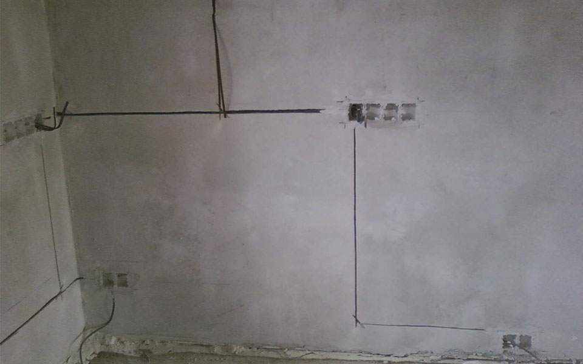
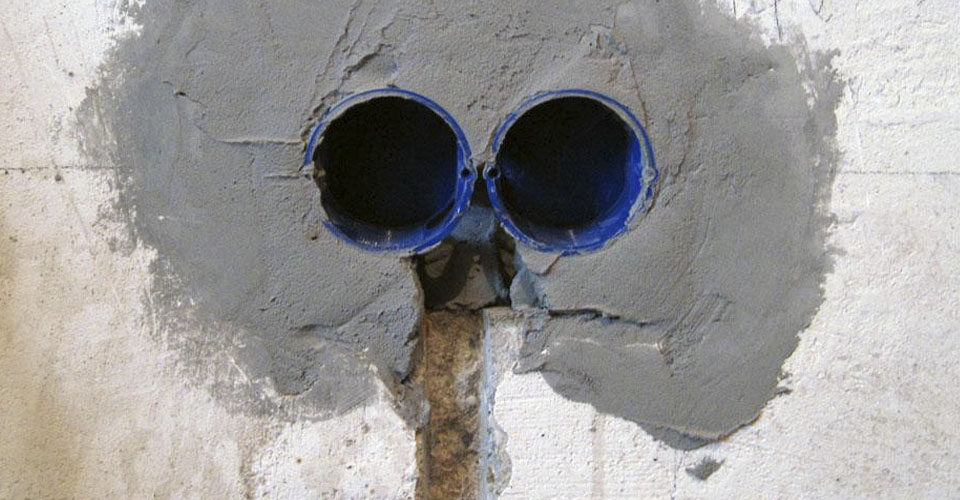
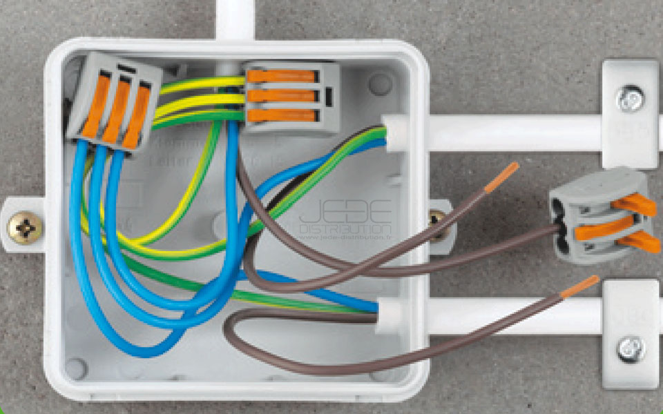
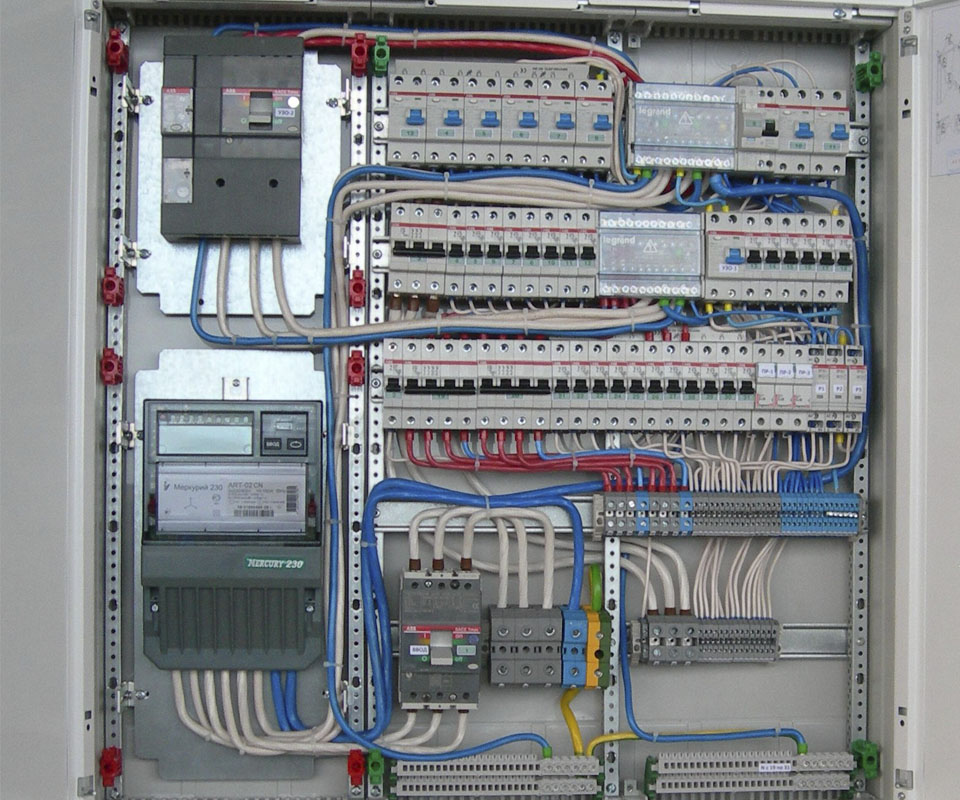

Статья содержит структурированную информацию, дабы ее было удобно использовать в качестве универсальной инструкции по электромонтажу для начинающих.
Очень просто – берете ручку, листок бумаги и начинаете представлять себе вашу квартиру с уже расставленной мебелью и техникой. Включайте фантазию, добавьте на черновой план все, что сможете придумать. После его составления, начинайте редактировать – добавлять и изменять количество розеток, или места расположения выключателей, например. Также, в самом начале вам стоит определиться с местом установки электрощита.
Для бурения отверстия под один подрозетник вам не нужно каких- то сложных схем на стене. Придумываете нужное расстояние от пола (обычно 25-35 см до центра подрозетника для розетки и 85-95 см до выключателя) и отмечаете это место крестиком или ещё как. Для того, чтобы разметить центра подрозетников для многопостового электроустановочного изделия, следует использовать уровень или осепостроитель. В месте установки будущего блока розеток нужно провести ровную линию, длиной, соответствующей количеству подрозетников. Расстояние между центрами стандартных подрозетников – 71мм. Соответственно, получившуюся горизонтальную линию следует разделить на отрезки именно этой длины. Количество вертикальных черт равняется кол-ву подрозетников. То же самое относится и к выключателям. Помните про дверные наличники вблизи их месторасположения (следует учитывать ширину наличника). После того, как все места для бурения подрозетников размечены, нужно наметить линии штроб, чтобы они (штробы) получились ровными. Их направление зависит от способа прокладки проводки. Будем рассматривать наиболее распространенный – по потолку открытым способом. Соответственно, штробы от отверстий пойдут строго вертикально. Также, ещё на уровне планирования нужно определиться со структурной схемой электропроводки. Будут ли распределительные (распаячные) коробки? Где они будут располагаться? А может, поведем розетки шлейфом? У каждого способа есть свои плюсы и минусы. О них писать пока не будем. Остановимся на варианте – «распредкоробки скрытой установки в стенах». Они обычно располагаются с некоторым отступом от потолка (в районе 15-20 см). Итак, от каждой коробки у вас будет отходить некоторое количество кабелей. Каким образом они будут доходить до розеток/выключателей, зависит от типа стен. Рассмотрим кирпичные стены. В них можно делать штробы как вертикально, так и горизонтально. Хорошим тоном считается делать вообще все штробы только вертикальные, но в этом случае увеличится расход кабелей.
Если вы собираетесь делать весь объем работ своими руками, вам однозначно понадобятся:
-перфоратор с набором буров и различных лопаток
-штроборез (бороздодел) с хорошими дисками по кирпичу/бетону
-специальный пылесос для отсоса пыли и крошки при производстве работ
Какой это будет инструмент – дорогой или дешевый, зависит от вашего кошелька. Естественно, что хорошим инструментом работать намного комфортнее и быстрее. Позаботьтесь также о средствах индивидуальной защиты: очки, перчатки, маски, беруши или наушники. Также можно прикупить бейсбольную биту для защиты от соседей с аллергией на громкий шум. Ну или коробку конфет, что, конечно же, будет лучше. Начинать следует с бурения отверстий в стенах. Говоря о кирпиче – это делается обычной коронкой по бетону/кирпичу. Предварительно нужно все намеченные центра (те самые крестики, с разметки) пробурить буром того же диаметра, что и направляющий бур у коронки. Коронку, кстати, следует подбирать больше, чем 68 мм. Получившийся стакан выбивается перфоратором. После этого проходите штроборезом все нарисованные линии прокладки кабелей. Объем кирпича между двумя резами выкалывается вручную зубилом, или перфоратором с плоской лопаткой.
Есть несколько типов кабелей для квартирной электропроводки. Для России это ВВГнгLS следующих параметров:
-3*10 мм2 для ввода, если у вас однофазное питание;
-5*10 мм2 для ввода, если у вас трехфазное питание;
-3*6 мм2 для электроплиты или варочной поверхности (1 фаза);
-5*2.5 мм2 для электроплиты и варочной поверхности (3 фазы);
-3*1.5 мм2 для линий освещения (где-то это может быть, например, 2*1.5 мм2 , или 5*1.5 мм2);
-3*2.5 мм2 для линий розеток.
То есть кабель будет промаркирован, к примеру, вот так - ВВГнгLS 3*2.5 мм2
Существует, опять же, несколько способов. Рассмотрим самый доступный для новичков. В магазине или на рынке надо купить специальные дюбель-хомуты для кабеля. Под эти хомуты в каждой штробе бурите отверстия, диаметром 6 мм. Закладываете кабель – крепите хомутом, все просто. Количество их на погонный метр должно быть таким, чтобы кабель не выступал из штробы. Обычно это 1-2 штуки на метр.
Для новичков снова можно посоветовать те же хомуты, что и для стен. Если у вас получилось большое количество линий, подумайте над специальными кабельными лотками в местах, где кабель идет пучком больше 5 линий.
Готовое отверстие с торчащим из него кабелем очищается от пыли, затем грунтуется. После этого, собственно, вмазывается сам подрозетник. Использовать можно любую гипсовую смесь, а также штукатурку, которой стены и оштукатурены. Шпателя размером 40 мм для запихивания раствора в отверстие и размером больше 100 мм для последующего выравнивания вам в помощь.
Не будем останавливаться на теории, объяснять про ноль, фазу и другие вещи. Соединять провода вам будет лучше всего специальными клеммниками WAGO. Это удобно, не слишком затратно, и эстетично. Есть мнение, что этот способ не очень надежный. Несомненно, скрутка выглядит более брутально. А тем более - последующая сварка концов. Но оставим это профессионалам.
На этом этапе лучше всего пожелать вам аккуратности и внимательности. Провода заземления должны быть подключены именно к заземляющим контактам. Провода в подрозетнике не должны быть оголенными. Винты розеток должны быть туго затянуты. Это, кстати, не относится к розеткам с самозажимными контактами. Поэтому если хотите упростить себе задачу, берите именно такие розетки.
Если все предыдущие этапы самостоятельной замены электропроводки вас не отпугнули, и вы готовы идти дальше, подумайте, а может поручить это дело электрикам? В расключениие электрощита есть большое количество нюансов. Постигнуть которые можно не сразу. И отсюда возникает риск возникновения ошибки. Поэтому если вы не уверены на 100%, не беритесь сами это делать. Конечно, если щит простой, знаний много не нужно. Рассмотрим основные моменты:
Электрощит однозначно следует делать в квартире. В подъезде можно оставить вводной автомат или разъединитель и счетчик.
Встраиваемый более эстетичен, но более трудоемок в монтаже. Также, встраиваемый щит трудно смонтировать в панельном доме.
Автомат, ограничивающий общую выделенную мощность у вас должен быть. Обычно он находится в этажном щите. Можно продублировать его автоматом с более низкой времятоковой характеристикой, чтобы, не бегать в подъезд при случайном превышении нагрузки на квартирную сеть.
В свете последних событий – выгоднее конечно же, ставить два раздельных устройства. При этом, одно УЗО сможет защищать несколько линий. Если желаете сэкономить место в щите, или располагаете хорошим бюджетом на ремонт, ваш выбор – на каждую защищаемую линию – свой дифф. Также можно взять дешевые устройства (IEK, TDM и пр.) и собрать щит на диффах за малый прайс. Но практика показывает, что скупой платит дважды.
Шанс того, что именно у вас случится 380 в розетках – ничтожно мал, но он есть. Некоторые не ставят себе подобные устройства просто потому, что не знают об их существовании. Если можете себе позволить отдать за эту вещь 1500-5000 руб – смело берите.
-Освещение - C10/B10 (если на освещение у вас кабель 1.5мм2)
-Освещение - C10/B10 (если на освещение у вас кабель 1.5мм2)
-Розетки – C16/B16
-Электроплиты, варочные панели – C32/B32
Прочие приборы, которые имеют нестандартное подключение (нет вилки, три фазы и т.п.) – Читать инструкцию к изделию. В ней всегда указано все что нужно для подключения.
Сам электрощит (оболочка) выбирается по количеству модулей. Причем, если у вас получилось 23 модуля – стоит взять на порядок больше, то есть не 24, а 36 модулей. Также, у некоторых производителей есть модели, в которых, например, 36 модулей легко превращается в 42.
Для каждого конкретного электрощита – всегда можно подобрать идеальное решение, сочетающееся с вашими финансовыми возможностями и предпочтениями по его наполнению.
(автор статьи Владимир Жарков, г. Челябинск. El-Safely.ru)